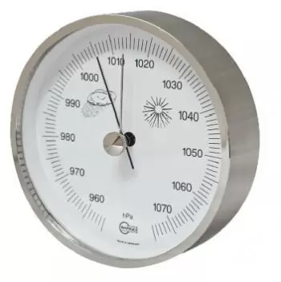

La presión (símbolo: p o P)12 es una magnitud física que mide la proyección de la fuerza en dirección perpendicular por unidad de superficie, y sirve para caracterizar cómo se aplica una determinada fuerza resultante sobre una línea.
En el Sistema Internacional de Unidades la presión se mide en una unidad derivada que se denomina pascal (Pa), que es equivalente a una fuerza total de un newton (N) actuando uniformemente sobre un área de un metro cuadrado (m²).3 En el sistema anglosajón la presión se mide en libra por pulgada cuadrada que es equivalente a una fuerza total de una libra actuando sobre un área de una pulgada cuadrada.
¿Qué es un Pascal en física?
El pascal (símbolo: Pa ) es una unidad derivada del Sistema Internacional utilizada para medir la presión interna, la tensión mecánica, el módulo de Young y la resistencia a la tracción. El Pascal se define como un newton por metro cuadrado
La unidad lleva el nombre de Blaise Pascal, conocido por sus contribuciones a la hidrodinámica e hidrostática, y los experimentos con un barómetro. El nombre pascal fue adoptado para la unidad SI newton por metro cuadrado (N / m 2 ) por la 14ª Conferencia General sobre Pesos y Medidas en 1971.
¿A qué equivale un Pascal?
A continuación adjuntamos una tabla de converision de Pascal a otras unidades de presión:
1 N / m2 = 1 Pa
101325 atm = 1 Pa
100000 bar = 1 Pa
9,80665 kg / m2 = 1 Pa
1 mm de columna de agua (mm H2O) = 9,80665 Pa
1 mm de columna de mercurio (mm Hg) = 133,322 Pa
Algunos múltiples comunes del pascal son el hectopascal (1 hPa = 100 Pa), que equivale a un milibar, el quilopascal (1 kPa = 1000 Pa), el megapascales (1 MPa = 1,000,000 Pa) y el gigapascal (1 GPa = 1,000,000,000 Pa).
La unidad de medida llamada atmósfera estándar (atm) se define como 101.325 Pa y se aproxima a la presión atmosférica a nivel del mar a una latitud de 45 ° N